| ORANGE CHICKEN Crujiente pollo sazonado con salsa agridulce y picante. |
BROCCOLI BEEF Trozos de carne de res cocinados al wok con brócoli, salsa soya y jengibre. 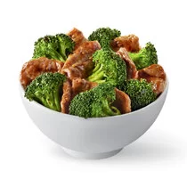 |
| KUNG PAO CHICKEN Pollo marinado, cocinado al wok con maní pimientos rojos, calabacín y chile de árbol 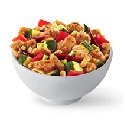 |
CANTONESE PORK Carne de cerdo marinada y cocinada al wok con brócoli, cebolla, champiñones, chile pimiento rojo y frijoles negros. Sazonada con salsa de ajo y jengibre. 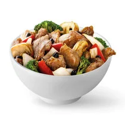 |
| KUNG PAO CHICKEN Pollo marinado, cocinado al wok con maní pimientos rojos, calabacín y chile de árbol |
CANTONESE PORK Carne de cerdo marinada y cocinada al wok con brócoli, cebolla, champiñones, chile pimiento rojo y frijoles negros. Sazonada con salsa de ajo y jengibre. |
| MUSHROOM CHICKEN Pollo, setas y calabacín salteados al wok con salsa de soya y jengibre. 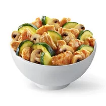 |
GRILLED TERIYAKI CHICKEN Pollo a la parilla con salsa teriiyaki 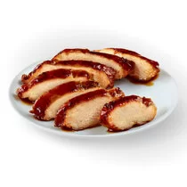 |
| HONEY WALNUT SHRIMP Camarones tempura al wok con una salsa demiel y nueces glaseadas 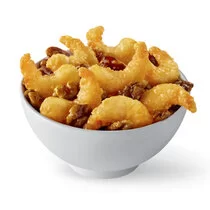 |
MONGOLIAN BEEF Carne de res marinada cocinada . al Wok con champiñones , chile pimiento. rojo, cebollín y cebolla sazonada con salsa de ajo. 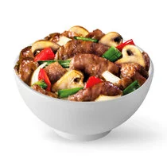 |
| BROCCOLI CHICKEN Pollo, broccoli y cebolla, . salteados al wok. 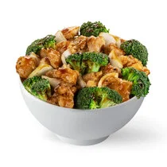 |
BLACK PEPPER CHICKEN Pollo a la pimienta, salteado. al wok con cebolla y aprio fresco. 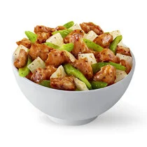 |
| VEGETALES Mezcla saludable de brócoli, calabacín, zanahoria , ejotes y repollo. 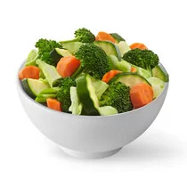 |
ARROZ BLANCO Arroz blanco. 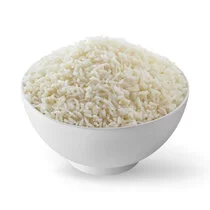 |
| CHOW MEIN Fideos de harina de trigo salteados con cebolla, apio y repollo. 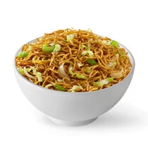 |
ARROZ FRITO Arroz blanco al vapor con salsa de soya, huevo, arveja, zanahoria y cebollín. 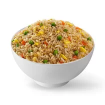 |
| VEGGIE SPRING ROLL Repollo, apio, zanahorias, cebolla y fideos chinos en una envoltura crujiente de wonton. 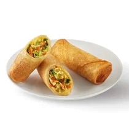 |
CREAM CHEESE RANGOON Crujiente wonton relleno de queso crema, acompañado de salsa dulce o picante. 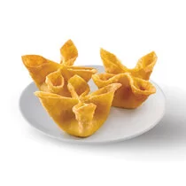 |
| MEAT WONTON Wonton relleno de carne, acompañado de salsa dulce o picante. 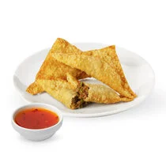 |
VEGGIE NOODLE SOUP Sopa con vegetales y chow mein. 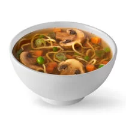 |
| FORTUNE COOKIE PACK Galletas de la fortuna |
CARAMEL WONTON Wonton chips acompañados de caramelo |
| RICE CHEESECAKE WONTON Wonton relleno de rice cheesecake, acompañado de fresa o caramelo. |
|